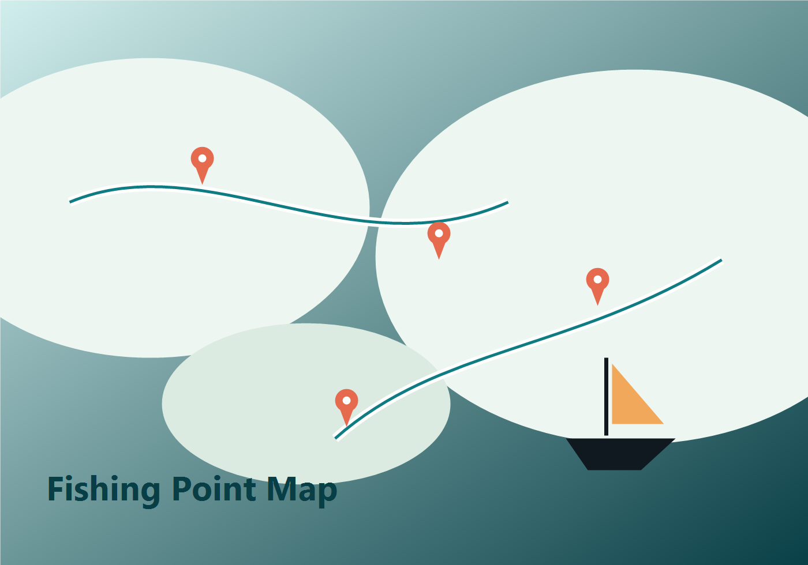
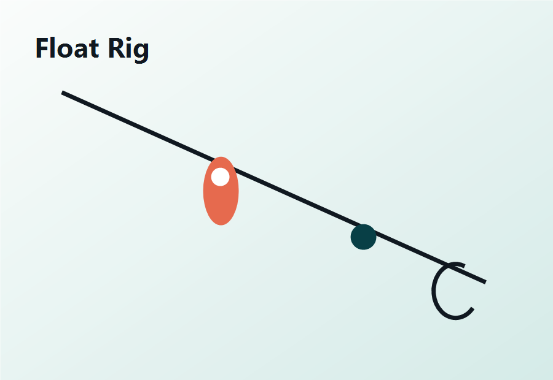
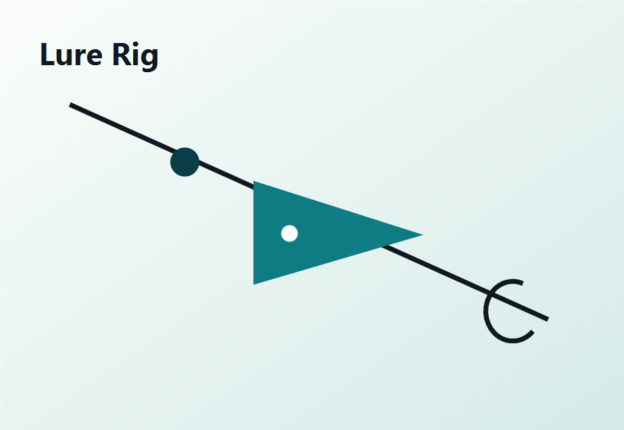
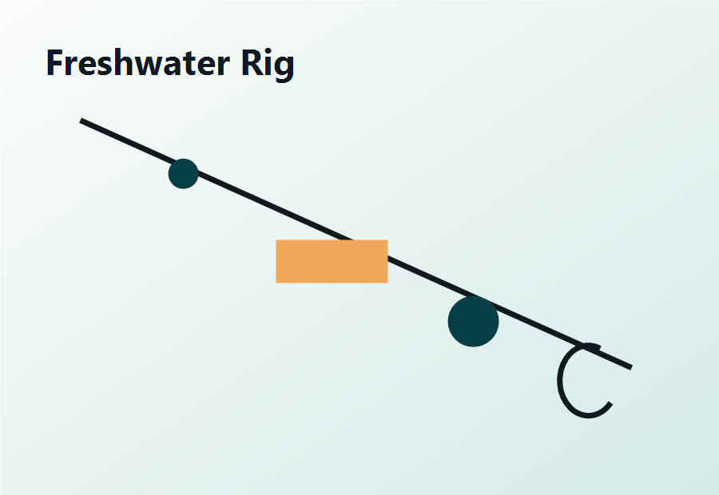

만조·간조 전후 입질이 붙는 시간을 기준으로 포인트를 고릅니다.
Fishing Guide Platform
출조 전 필요한 정보를 한 화면에서 확인하세요
초보자용 채비법부터 지역별 낚시 포인트, 시즌별 대상어, 광고 수익화를 고려한 콘텐츠 구조까지 담은 낚시 정보 사이트입니다.

오늘 추천
만조 전후 2시간
방파제 · 워킹 루어
대상어
광어 · 우럭 · 감성돔
지역별 포인트에서 확인
대상어와 수심에 따라 찌낚시, 다운샷, 원투 채비를 나눕니다.
포인트 카드의 지도 버튼으로 네이버 지도와 구글 지도를 바로 엽니다.
Rig Library
상황별 채비법
입문자도 바로 준비할 수 있게 난이도, 대상어, 준비물을 함께 정리했습니다.
바다 · 초보
감성돔 반유동 찌낚시
수심층을 조절하면서 흘리는 기본 채비입니다. 방파제와 갯바위 입문에 좋습니다.
- 대상어: 감성돔, 벵에돔
- 준비물: 구멍찌, 수중찌, 목줄, 바늘
- 난이도: 쉬움

루어 · 바다
광어 다운샷 워킹 채비
바닥을 읽으면서 넓게 탐색하는 채비입니다. 모래와 자갈이 섞인 지형에 적합합니다.
- 대상어: 광어, 우럭
- 준비물: 다운샷 싱커, 웜, 오프셋 훅
- 난이도: 보통

민물 · 초보
붕어 원투 낚시 채비
저수지와 강계에서 안정적으로 운용할 수 있는 기본 채비입니다.
- 대상어: 붕어, 잉어
- 준비물: 원투대, 묶음추, 떡밥, 받침대
- 난이도: 쉬움
Point Map
지도와 연결되는 낚시 포인트
버튼을 누르면 해당 장소가 네이버 지도 또는 구글 지도 검색으로 열립니다.생활낚시와 가족 출조에 좋은 포인트입니다. 만조 전후 우럭, 노래미, 광어 탐색에 적합합니다.
- 추천 시간
- 만조 전 1시간 ~ 만조 후 2시간
- 대상어
- 우럭, 노래미, 광어
- 편의성
- 주차 가능, 근처 편의시설 있음
퇴근 후 짧게 다녀오기 좋은 도심형 포인트입니다. 베이트피시 움직임이 보이는 구간을 공략하세요.
- 추천 시간
- 해질녘 ~ 야간 초반
- 대상어
- 배스, 강준치, 누치
- 편의성
- 대중교통 접근 좋음
선상낚시 출항지로 많이 쓰이는 곳입니다. 예약 전 기상, 선비, 장비 대여 여부를 확인하세요.
- 추천 시간
- 출항 일정 기준
- 대상어
- 한치, 참돔, 볼락
- 편의성
- 선상 예약, 장비 대여 업체 다수
Season Strategy
월별 추천 콘텐츠
서해 워킹 루어, 방파제 찌낚시, 초보 장비 추천 글을 묶어 운영하기 좋습니다.
집어등, 안전 장비, 야간 채비법 콘텐츠를 광고형 글과 연결하기 좋습니다.
주차, 화장실, 매점이 있는 포인트 위주로 검색 유입을 노릴 수 있습니다.
Ad Ready
광고 수익화를 고려한 배치
상단 배너, 포인트 카드 사이 네이티브 광고, 사이드 배너, 하단 제휴 링크를 넣기 쉽게 영역을 분리했습니다.
상단 광고
본문 광고
지도 주변 광고
제휴 링크